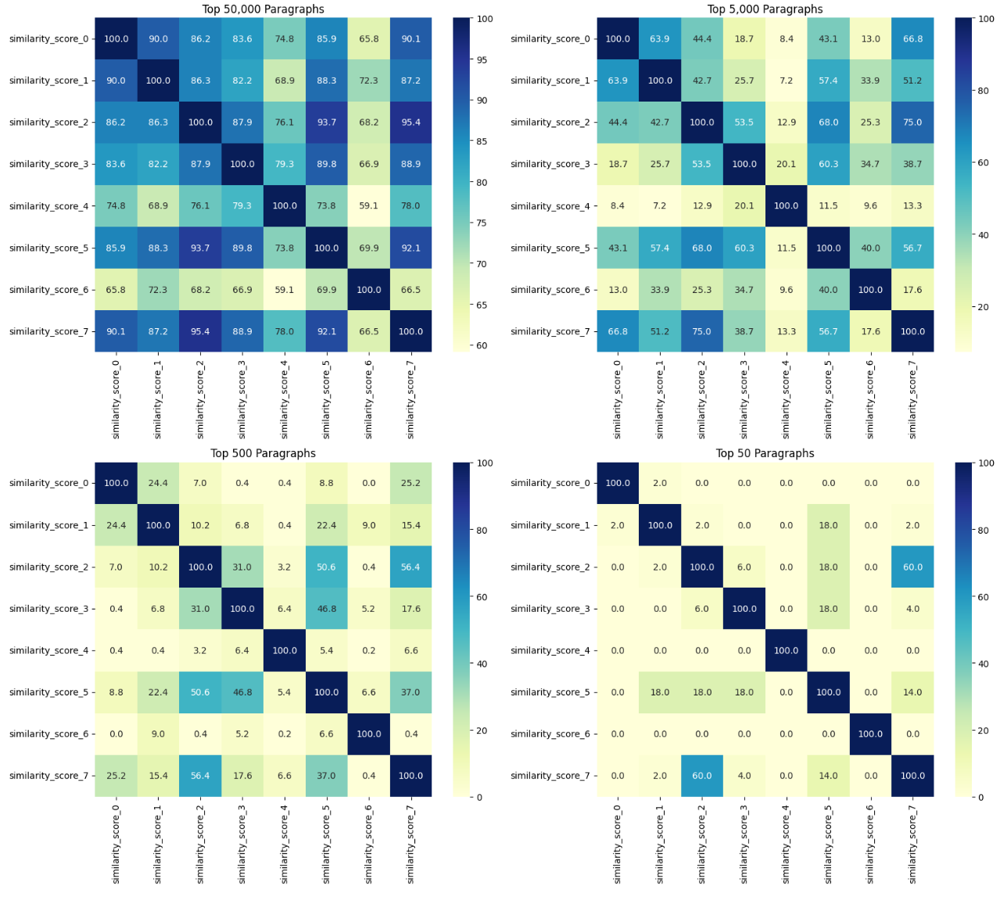

Q-methodology studies subjectivity by having participants sort a Q-sample of 30–60 statements drawn from a broader concourse. The validity of every Q-study depends on the breadth, neutrality, and balance of that statement pool.
Concourse construction is currently labor-intensive, idiosyncratic across teams, and hard to scale, especially in multilingual settings or under tight project timelines. This bottleneck limits real-world adoption of Q-methodology and of derived instruments such as the Deliberative Reason Index (DRI).
Goal. A reproducible, language-agnostic pipeline that produces Q-ready candidate statements from any text corpus + a list of subtopics — with the researcher retained as final curator.
Stages 1, 3, 4 are deterministic and auditable; stages 2 and 5 are LLM-based; stage 6 is expert-driven. Every retained statement carries provenance back to its top-10 source paragraphs.
An anchor is a short paragraph that semantically represents one subcategory of the discourse. Anchors are embedded alongside the corpus; passages are scored by cosine similarity to anchors and retrieved per subcategory.
This gives the researcher fine-grained control over what the concourse covers — substantially more so than unsupervised clustering — while keeping the retrieval step deterministic and inspectable.

Before settling on anchor-guided retrieval, we tried the more obvious unsupervised route: cluster paragraph embeddings with HDBSCAN and summarize clusters with BERTopic.
Clusters were dominated by named entities — pharma companies, federal offices, individual politicians — rather than argumentative themes. Projecting clusters onto our anchor scores, the maximum gap between within-cluster anchor similarities was only 0.185 among the top-20 clusters, at low absolute similarity (≤ 0.6).
Conclusion: HDBSCAN/BERTopic are not weak in general, but this unsupervised path clustered on keywords, not on sub-discourses. Anchors encode the researcher's hypothesis space; clustering does not.
Developed alongside Bevölkerungsrat 2025, a Swiss citizens' assembly on healthcare costs (Nov 2024 – Mar 2025, 100 participants sorted from a contact pool of 22 000).
The 28-item consideration set and 8-item policy-options set were administered pre- and post-deliberation. DRI rose from 0.16 → 0.19; an independent multifactor analysis (Veri, 2025) recovered 8 factors with eigenvalues > 1, consistent with the 8 anchors we constructed.
Re-ran the pipeline on Swiss food policy and compared against a human-authored DRI survey (Mathys, 2024).
Unmatched items were either highly general first-person/ethical claims or fringe views absent from mainstream Swiss media — a real limitation of any news-corpus-based approach.
G1Anchor autonomy. Anchors are LLM-written but conditioned on a pre-existing expert policy report. A general tool needs anchors derived from the corpus itself or from stakeholder documents — under expert review when available.
G2Validation breadth. Current evidence is one qualitative single-rater comparison. A credible study needs multiple raters, multiple topics, blinded origin labels, and ideally a pilot Q-sort comparing factor structures from pipeline- vs. human-authored Q-samples.